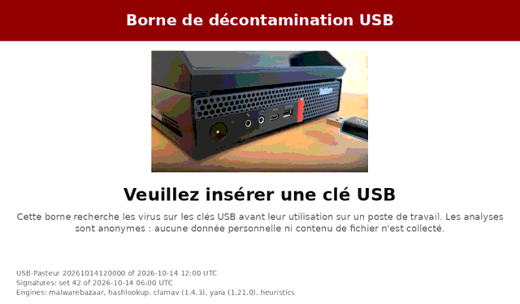
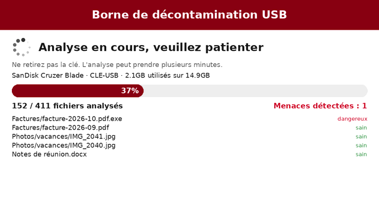
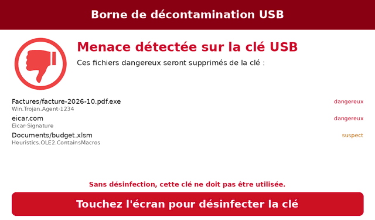
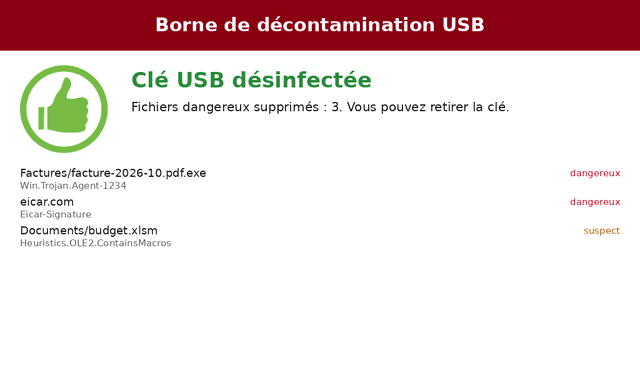

Interface de la borne¶
La borne montre ce qu'elle fait sur son écran tactile : attente d'une clé, progression de l'analyse, fichiers dangereux trouvés, puis résultat. Il n'y a pas de bouton : la seule action de l'utilisateur est un appui n'importe où sur l'écran pour lancer le nettoyage, une fois les fichiers à supprimer listés.
| Attente d'une clé | Analyse en cours |
|---|---|
 |
 |
| Menaces trouvées : appuyez pour nettoyer | Clé nettoyée |
 |
 |
Écrans¶
| Écran | Quand |
|---|---|
ready |
Attente d'une clé (animation d'une clé insérée), avec les versions de la borne et de ses signatures |
unavailable |
Pas de signatures valides : la borne n'accepte qu'une clé de mise à jour des signatures |
scanning |
Clé, barre de progression, fichiers analysés sur le total, menaces trouvées jusqu'ici, derniers fichiers analysés et leur verdict |
threats |
Les fichiers qui vont être supprimés, avec leur détection ; un appui sur l'écran nettoie la clé |
cleaning |
Les fichiers en cours de suppression |
clean |
Aucune menace trouvée : la clé peut être utilisée |
warning |
Des fichiers suspects ou pas entièrement analysés sont conservés (scan.suspicious ou scan.on_error réglé sur warn) |
cleaned |
Les fichiers supprimés |
not_cleaned |
Les fichiers qui n'ont pas pu être supprimés, ou la clé a été retirée avant le nettoyage |
not_verified |
Des fichiers n'ont pas pu être analysés (scan.on_error = "block") : la clé ne doit pas être utilisée |
error |
La clé n'a pas pu être montée ou lue |
service |
Clé de maintenance, de mise à jour des signatures ou de l'image : les messages de la borne |
Un résultat (analyse, clé de maintenance ou de mise à jour) reste à l'écran
jusqu'au retrait de la clé, puis encore display.return_seconds (5 secondes
par défaut) avant l'écran d'attente. Insérer une autre clé affiche aussitôt
son analyse.
Comment l'interface est dessinée¶
Les écrans sont dessinés avec Pillow et copiés
dans le framebuffer Linux (display.framebuffer, /dev/fb0) : pas de
serveur d'affichage, pas de navigateur, rien qui écoute sur un socket. La
borne met sa console (tty1) en mode graphique, pour que le noyau n'écrive
pas de texte par-dessus les écrans. Les appuis sont lus depuis
/dev/input/mice (l'écran tactile est vu comme une souris), seulement
pendant que la borne attend la confirmation du nettoyage. Les noms de
fichiers et les étiquettes des clés viennent de la clé : ils sont rendus
imprimables (caractères de contrôle et de formatage invisibles remplacés) et
coupés à leur place, jamais interprétés. L'interface graphique nécessite un
framebuffer de 24 ou 32 bits par pixel (Intel, efifb, QEMU).
La configuration la choisit avec kiosk.interface = "framebuffer" (par
défaut) ; curses est l'interface texte (mode administrateur), console
affiche du texte brut (développement).
Personnalisation¶
Un administrateur adapte l'interface à son organisation : logo, couleurs, textes de chaque écran et leur langue, images. L'image est en lecture seule (dm-verity) : le thème en fait partie, et un changement demande une nouvelle image (ou une mise à jour de l'image).
Configuration¶
Dans packaging/pandora-box.toml, section [display] :
[display]
# Dossier du thème, installé dans l'image depuis image/theme/
theme = "/usr/share/pandora-box/theme"
# Langue des textes : "en", "fr", ou une langue ajoutée par le thème
language = "fr"
# Secondes avant l'écran d'attente, une fois la clé retirée
return_seconds = 5.0
Dossier du thème¶
Créez image/theme/ dans le dépôt : la construction de l'image le copie
dans /usr/share/pandora-box/theme et le vérifie (la construction échoue sur
un thème invalide). Le dossier contient un theme.toml et les fichiers qu'il
cite. Chaque clé est facultative : une clé du thème remplace celle du thème
intégré (src/pandora_box/ui/theme/theme.toml, qui les liste toutes), les
autres sont conservées.
image/theme/
├── theme.toml
└── logo.png
# Logo de l'organisation, à gauche de l'en-tête (PNG ou JPEG)
logo = "logo.png"
# Polices TrueType, fichiers du dossier (par défaut : DejaVu Sans)
# font = "OpenSans-Regular.ttf"
# font_bold = "OpenSans-Bold.ttf"
[colors]
header = "#003366"
progress = "#003366"
[texts.fr]
title = "Hôpital de Mons - Borne antivirus"
footer = "Service informatique - poste 1234"
insert_help = "Analysez toute clé USB avant de l'utiliser sur un poste de l'hôpital."
clean_help = "Cette clé peut être utilisée. N'oubliez pas de la retirer."
Textes¶
Chaque texte affiché à l'écran est une clé de [texts.<langue>] : le titre
de l'en-tête, le pied de page, le titre et l'aide de chaque écran, les
verdicts des fichiers. Certains textes ont des emplacements, remplacés par
la borne :
| Texte | Emplacements |
|---|---|
scan_progress |
{done}, {total} |
scan_threats, cleaned_help, more_files |
{count} |
device_usage |
{size}, {used} |
Un texte avec un emplacement inconnu ou une clé inconnue est refusé. Un
thème peut ajouter une langue : [texts.de] avec les textes qu'il traduit,
les autres restent en anglais ; réglez ensuite display.language = "de".
Les messages des écrans service, error, unavailable et cleaning sont
ceux des journaux de la borne (en anglais) : ils s'adressent à
l'administrateur, et ne font pas partie du thème.
Couleurs¶
header, header_text, background, text, muted (aide, détails),
clean, threat, warning, progress, progress_background :
"#rrggbb".
Images¶
[images] : insert (animation de l'écran d'attente, une image par
seconde), busy (animation pendant que la borne travaille), clean,
threat, error (icônes des résultats). PNG (avec transparence) ou JPEG,
4096 pixels au maximum. Les images intégrées viennent de la première version
de PandoraBox.
Vérifier et prévisualiser un thème¶
Sans borne, sur l'ordinateur de développement :
pandora-box-theme check image/theme
pandora-box-theme preview image/theme /tmp/preview # toutes les langues
pandora-box-theme preview image/theme /tmp/preview --language fr --size 800x480
preview dessine chaque écran, avec des fichiers fictifs, dans des fichiers
PNG. pandora-box --check-config vérifie aussi le thème de la
configuration.